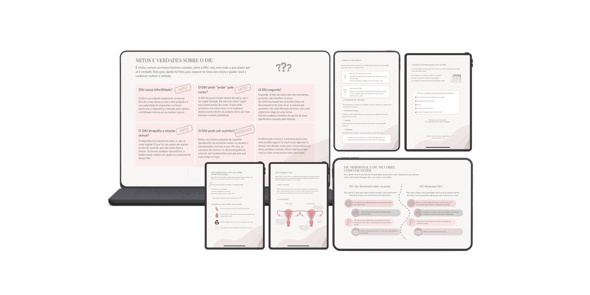

Com o Cuidado Além da Consulta, você entrega cuidado real, reforça sua autoridade e fideliza pacientes sem precisar alongar suas consultas.
Quero Humanizar Minhas Consultas Agora
Visualização do Kit DIU em diferentes dispositivosCuidado mesmo após a consulta
Informação no momento certo
Diferenciação e autoridade
Sem esforço extra na rotina
É uma biblioteca de materiais prontos e totalmente editáveis que ajudam ginecologistas a ampliar o cuidado com suas pacientes dentro e fora do consultório.
Podem ser usados para:
Totalmente Editável no Canva
Ideal para ginecologistas que buscam uma comunicação eficiente e humanizada, além de padronização estratégica.
Acesso imediato por 1 ano
Conteúdo dividido por temas clínicos
Adapte cores e textos com sua identidade
O primeiro kit foi criado para um dos temas que mais gera dúvidas no consultório: DIU. Os materiais foram pensados para desmistificar o método e acolher a paciente.
O que é e como funciona.
Passo a passo da colocação.
Escolha ideal para a paciente.
Desmistificando o método.
O que esperar após o procedimento.
Valor promocional pelos primeiros 7 dias
Após o período promocional
o valor volta ao preço de R$ 147,00
O Cuidado Além da Consulta será uma coleção de kits voltados para as dúvidas mais comuns do consultório ginecológico. Novos temas serão lançados ao longo do tempo.
Sim! Você recebe os links do Canva para editar cores, fontes, textos e inserir seu logotipo em poucos segundos.
Você pode enviar os PDFs via WhatsApp ou e-mail após a consulta, ou até mesmo imprimir e entregar fisicamente no consultório. Pode ainda compartilhar o conteúdo nas redes sociais do consultório.
Após a confirmação da compra, você receberá um e-mail com todas as instruções para acesso.
Grande parte das orientações verbais dadas em consulta é esquecida. Materiais visuais reforçam o que foi dito e garantem que a paciente saiba o que fazer em casa.
O cuidado que vai além do consultório gera gratidão e aumenta drasticamente a percepção de valor da sua consulta.
Tenha uma comunicação visual e textual coesa, transmitindo muito mais profissionalismo sem gastar horas produzindo conteúdo.
Mantenha o alto padrão de atenção personalizada mesmo com a agenda cheia, através de fluxos de informação estruturados.
| Com o Kit | Sem o Kit | |
|---|---|---|
| Comunicação pós-consulta | Estruturada e no momento certo | Apenas verbal/genérica |
| Humanização | Escalável | Limitada ao tempo da consulta |
| Fidelização | Alta e constante | Variável |
| Tempo gasto | Pouco esforço adicional | Produção manual de materiais |
| Diferenciação no mercado | Clara e estratégica | Pouco destaque |
Suporte por e-mail e WhatsApp para dúvidas, orientações de uso e acesso a atualizações.